One git worktree per task, so several tasks of one repository run side by side.
Give each coding agent its own lane: a reusable worktree that keeps its dependencies and build caches, held with a lease so no other session takes it, with shared things (the emulator, heavy builds, ports) handed out one at a time, and a check that the lanes still pass together before and after each merge.

.git; each has its own files, dependencies and build output. The state is
git worktree list itself: no daemon, no database. Open the diagram
git worktree gives each task its own folder. The hard parts come after: installing again in every new folder, two
agents on one emulator or one port, four builds at once running out of memory, and two branches that merge cleanly as text but
break each other.
Numbered worktrees <repo>-<n> that come back to a pool. A task gets the slot it had before, else a
free one; dependencies are installed again only when a lockfile changed, so a new task starts in seconds. In a big
repository a slot can hold only the folders its task needs (--sparse), and npm dependencies can come as
hard links from a lane on the same lockfile (--link-deps).
A slot is held with git worktree lock and read back with this hold's lease, so two sessions never take the same
slot. lane done refuses to give back work that is not on the remote.
lane claim emulator waits for the Android emulator, lane with build -- <cmd> lets two heavy
builds run at once, and lane port 3000 gives each slot its own range of ports.
lane verify merges every open lane on top of the base and runs the checks before the first one merges.
lane sync rebases the rest after a merge and checks them again.
lane clean gives back the lanes whose work merged, squash merges included, even without asking GitHub. A lane
still held for follow-up rounds stays.
Each lane gets a CLAUDE.local.md with these rules, and lane brief prints them for a sub-agent. Heavy
git hooks such as pre-push wait for a build slot.
Two agents on one repository, from the first command to the slots given back.
$ lane new myrepo feat/a # slot myrepo-1, branch feat/a $ lane new myrepo feat/b # slot myrepo-2, branch feat/b $ lane list # held or free, branch, changes, PR and CI $ lane verify myrepo # before merging: do the two pass together? # merge feat/a's pull request, then: $ lane sync myrepo --push # feat/b onto the new base, checked again, pushed $ lane clean --yes # merged slots back to the pool, main clone pulled
With junto each lane keeps its own task and quality gates, and
/junto:status all shows every lane's task in one table (or a board with /junto:status html). junto warns
when the base moved since a lane was verified, the same lesson lane sync acts on.
lane new <repo> <task> |
Take a slot for a task: new branch, submodules, env files, install when lockfiles changed, notes for the agent.
--pr <n> works on a pull request's branch; --sparse <folder> checks out only those
folders; --pool review keeps reviews in slots of their own.
|
|---|---|
lane done [<lane>] |
Give the slot back once its work is pushed or merged. |
lane list |
Every lane: held or free, branch, local changes, pull request and CI. |
lane verify <repo> · lane sync <repo> |
All open lanes merged together and checked; after a merge, the rest rebased and checked again. |
lane clean · lane free · lane rm |
Give back merged lanes, free a hold left behind by a closed session, delete a slot for good. |
lane claim · lane with · lane port |
The emulator for one lane at a time, a cap on heavy builds, a range of ports per slot. |
lane brief |
The rules for an agent working in a lane, to paste into its task. |
Built and used daily on Windows; CI runs it on Windows, Ubuntu and macOS.
gh, logged in, for pull request and CI state (optional).
Node does not run .ts files inside node_modules, so lane is not on npm.
$ git clone https://github.com/vannt-dev/lane $ cd lane && npm install && npm link
LANE_REPOS holds your clones, LANE_ROOT the slots. Both are required.
# Windows $ setx LANE_REPOS D:/code $ setx LANE_ROOT D:/wt # macOS / Linux (shell profile) export LANE_REPOS="$HOME/code" export LANE_ROOT="$HOME/wt"
lane new --open starts Claude Code in a new Windows Terminal tab; elsewhere it prints the command to run.
lane done detaches the slot.lane verify catches lanes that break each other only as far as your checks reach: tests, typecheck, lint.